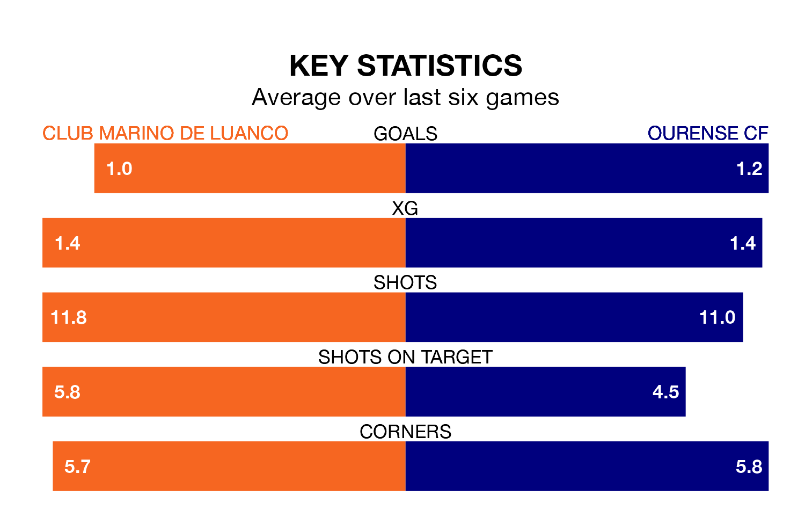

Two of Segunda División RFEF Group 1's meanest defences go head-to-head at Estadi Municipal de Miramar on Sunday, when Ourense CF visit Club Marino de Luanco.
Only one side – Zamora CF – has conceded fewer goals than Ourense to date: the away side have let in just 10 goals in 18 games.
Club Marino de Luanco have conceded 14 goals in 18 games, giving them the fourth tightest back line so far this season.
Ourense are top of the table after 18 games, of which they have won 11 and drawn five, earning 38 points.
Club Marino de Luanco are 10 places behind the visitors in 11th, with four wins and nine draws putting them on 21 points.
In the last three years, Club Marino de Luanco and Ourense have played each other on three occasions. Club Marino de Luanco won two of them and Ourense one.
Their last meeting was on September 10, when Ourense won 1-0 at home.
The home side are in mixed form in Segunda División RFEF Group 1, with two wins and three draws from their last six games.
With three wins and two draws over that period, Ourense's form is slightly better – they have taken 11 points from 18, compared to Club Marino de Luanco's nine.
Club Marino de Luanco's last match was on Sunday, a 2-0 win against SD Compostela.
Ourense beat Racing Santander B 3-0 last time out, on January 13.
Updated: 13:09 (UTC), 17/01/24